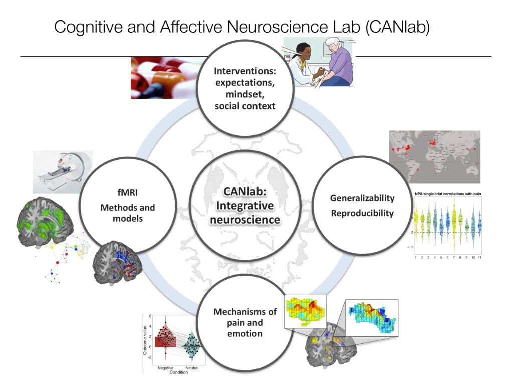

- Publications
- 400+
- Since
- 2000
- Papers with PDF
- …
- Lab members past & present
- …
Sections
Explore the lab
Move your cursor over the network on the right to see activity spread between its nodes.
Research
Belief and expectation, brain-body interactions, affect and emotion, pain biomarkers, craving, and individualized brain models.
Publications
Every paper since 2000 with PDFs, brain maps, code and data, searchable by keyword and filterable by topic, approach and type.
People
Postdocs, graduate students, staff and research assistants, plus alumni of the lab at Dartmouth, Colorado and Columbia.
Tools & training
Open-source neuroimaging toolboxes, brain signature patterns, datasets, the Principles of fMRI book and Coursera courses.
News
Lab news and press coverage, from the Wall Street Journal and Nature to podcasts and radio, updated automatically.
Collaborator network
An interactive map of the lab's co-authors, computed in your browser from the publication database.
Join us
Open positions, how to apply as a postdoc, student or visiting scholar, and how to participate in a study.
Reading lists
Star papers into your own lists, export them to Zotero, EndNote or BibTeX, and sign in to sync across devices.
Latest
Recent papers
The most recent publications and preprints. Browse all papers or subscribe by RSS.
In the news
Recent coverage
Press, podcasts and lab announcements. All news.
Open science
Tools, data and brain signatures, shared openly
The lab maintains a family of open-source MATLAB toolboxes for neuroimaging analysis, publishes its brain signature patterns and atlases, releases data from published studies, and runs the Science of Placebo research hub. Everything on this site, including the publication database and its tags, is open on GitHub.

About the lab
Founded in 2004, at Dartmouth since 2019
Tor Wager is the Diana L. Taylor Distinguished Professor in Neuroscience at Dartmouth College. He has directed the Cognitive and Affective Neuroscience Laboratory since 2004, first at Columbia University, then at the University of Colorado Boulder, and now at Dartmouth. The lab works on the neurophysiology of affective processes and on analysis methods for functional neuroimaging, and shares its ideas, tools and data with the scientific community and the public.